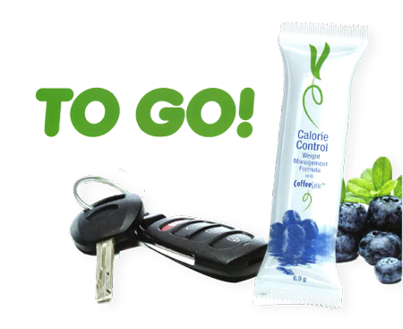
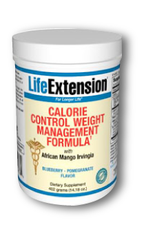

<!DOCTYPE html PUBLIC "-//W3C//DTD XHTML 1.0 Transitional//EN"
"http://www.w3.org/TR/xhtml1/DTD/xhtml1-transitional.dtd">
<html xmlns="http://www.w3.org/1999/xhtml">
<head>
<link rel="canonical" href="{$canonical}" /><link rel="canonical" href="{$content_obj->GetURL()}" />
<meta name="author" content="http://risingline.com" />
<meta http-equiv="Content-Type" content="text/html; charset=utf-8" />
<meta name="robots" content="index,follow" />
<!-- <link rel="alternate" type="application/rss+xml" title="RisingLine | Web 2.0 Marketing RSS Feed" href="http://feeds.feedburner.com/NewMediaMarketing" />-->
<meta http-equiv="Content-Language" content="en-us" />
<link rel="shortcut icon" href="favicon.ico" />
<title>Calorie Control</title>
<link rel="stylesheet" type="text/css" href="style.css" />
<!--[if lte IE 6]>
<meta http-equiv="refresh" content="0; url=/ie6.html" />
<script type="text/javascript">
/* <![CDATA[ */
window.top.location = '/ie6.html';
/* ]]> */
</script>
<![endif]-->
<link rel="stylesheet" type="text/css" href="{root_url}/assets/css/01/01-horizontal.css" />
<meta name="viewport" content="width=device-width, initial-scale=1, maximum-scale=1">
<script language="JavaScript" type="text/javascript" src="{root_url}/assets/js/emailpage.js"></script>
<link rel="stylesheet" href="assets/js/default/default.css" type="text/css" media="screen" />
<link rel="stylesheet" href="assets/js/themes/pascal/pascal.css" type="text/css" media="screen" />
<link rel="stylesheet" href="assets/js/themes/orman/orman.css" type="text/css" media="screen" />
<link rel="stylesheet" href="assets/js/nivo-slider.css" type="text/css" media="screen" />
</head>
<body>
<div class="preload"> 
  <!-- --> 
</div><!--End Preload-->
<div id="wrapper">
  <div id="banner">
  	
  	
  	<h2>Calorie Control Weight Management</h2>
  	<p>with CoffeeGenic<sup>TM</sup> Green Coffee Extract</p>
    
  </div><!--End Banner-->
  <div id="content">
  	<div class="photo" id="navbar">
  	<ul style="margin-top:15px">
  		<li id="about"><a href="about.html">About</a></li>
  		<li id="natural"><a href="natural.html" >All Natural</a></li>
  		<li id="results"><a href="results.html">Results</a></li>
  		<li id="buynow"><a href="Buy Now">Buy Now</a></li>
  	</ul>
  	</div><!--End Navbar-->
    <div class="round" id="maincontent">    
    <!-- jQuery (required) -->
    	<script src="http://ajax.googleapis.com/ajax/libs/jquery/1.6/jquery.min.js"></script>
    	<script>window.jQuery || document.write('<script src="assets/js/jquery.min.js"><\/script>')</script>
    
       	<!-- Anything Slider -->
    	<link rel="stylesheet" href="assets/css/anythingslider.css">
    	<script src="assets/js/jquery.anythingslider.js"></script>
    
    	<!-- include the animate.css library -->
    	<link rel="stylesheet" href="assets/css/animate.css">
    	<!-- AnythingSlider optional extensions, needed for animate.css compatibility -->
    	<script src="assets/js/jquery.anythingslider.fx.js"></script>
    
    	<!-- <script src="js/jquery.anythingslider.video.js"></script> -->
    
    	<!-- Define slider dimensions here -->
    	<style>
    	#slider { width: 615px; height: 390px; }
    
    	/* animate.css animation settings 
    	 * If animating elements inside the panel, include the element here ( e.g. #slider li, #slider img {...} )
    	 */
    	#slider li {
    		-webkit-backface-visibility: hidden;
    		-moz-backface-visibility: hidden;
    		-ms-backface-visibility: hidden;
    		backface-visibility: hidden;
    		-webkit-animation-duration: 1s;
    		-webkit-animation-delay: .2s;
    		-webkit-animation-timing-function: ease;
    		-webkit-animation-fill-mode: both;
    		-moz-animation-duration: 1s;
    		-moz-animation-delay: .2s;
    		-moz-animation-timing-function: ease;
    		-moz-animation-fill-mode: both;
    		-ms-animation-duration: 1s;
    		-ms-animation-delay: .2s;
    		-ms-animation-timing-function: ease;
    		-ms-animation-fill-mode: both;
    		animation-duration: 1s;
    		animation-delay: .2s;
    		animation-timing-function: ease;
    		animation-fill-mode: both;
    	}
    	</style>
    
    	<!-- AnythingSlider initialization -->
    	<script>
    		// DOM Ready
    		$(function(){
    
    			$(function(){
    			 $('#slider2') // Demo 2 code, using FX full control
    			  .anythingSlider({
    			   resizeContents      : false,
    			   navigationFormatter : function(i, panel){
    			    return ['Recipe', 'Quote', 'Image', 'Quote #2', 'Image #2', 'Test'][i - 1];
    			   }
    			  })
    			  .anythingSliderFx({
    			   // base FX definitions can be mixed and matched in here too.
    			   '.fade' : [ 'fade' ],
    			
    			   // for more precise control, use the "inFx" and "outFx" definitions
    			   // inFx = the animation that occurs when you slide "in" to a panel
    			   inFx : {
    			    '.textSlide h3'  : { opacity: 1, top  : 0, duration: 400, easing : 'easeOutBounce' },
    			    '.textSlide li'  : { opacity: 1, left : 0, duration: 400 },
    			    '.textSlide img' : { opacity: 1, duration: 400 },
    			    '.quoteSlide'    : { top : 0, duration: 400, easing : 'easeOutElastic' },
    			    '.expand'        : { width: '100%', top: '0%', left: '0%', duration: 400, easing : 'easeOutBounce' }
    			   },
    			   // out = the animation that occurs when you slide "out" of a panel
    			   // (it also occurs before the "in" animation)
    			   outFx : {
    			    '.textSlide h3'      : { opacity: 0, top  : '-100px', duration: 350 },
    			    '.textSlide li:odd'  : { opacity: 0, left : '-200px', duration: 350 },
    			    '.textSlide li:even' : { opacity: 0, left : '200px',  duration: 350 },
    			    '.textSlide img'     : { opacity: 0, duration: 350 },
    			    '.quoteSlide:first'  : { top : '-500px', duration: 350 },
    			    '.quoteSlide:last'   : { top : '500px', duration: 350 },
    			    '.expand'            : { width: '10%', top: '50%', left: '50%', duration: 350 }
    			   }
    			  });
    			});    
    		});
    	</script>
    
    	<!-- Older IE stylesheet, to reposition navigation arrows, added AFTER the theme stylesheet -->
    	<!--[if lte IE 7]>
    	<link rel="stylesheet" href="css/anythingslider-ie.css" type="text/css" media="screen" />
    	<![endif]-->
    </head>
    

    	<!-- CSS3 AnythingSlider -->
    
    	<ul id="slider">
    		<!-- data-animate="IN animation, OUT animation" can be applied to the panel or ANY element inside the panel -->
    		<li data-animate="rotateInDownLeft, rotateOutDownRight">
    		
    		<h1>Lose Those Extra Pounds With All Natural Instant Coffee!</h1>
    		 <p>Nearly 80% of highly motivated people fail to achieve long-lasting weight loss with diet & lifestyle modifications alone. That’s why  the Calorie Control Weight Management Formula was designed.<br /><br />
    		 Clinical studies validate that when overweight humans take some of the natural ingredients in this formula combined with reduced calorie intake, there is a greater loss of body fat compared to diet alone.<br /><br />
    		 The new  Calorie Control Weight Management Formula comes with a natural Blueberry Flavor that tastes far smoother than the original version. This powder mix is available in a 60-serving bottle and in individual stick packs that you can conveniently use when away from home.</p>
    		<li data-animate="rotateIn, rotateOut">
    		<h1>About</h1>
    		 <p>Nearly 80% of highly motivated people fail to achieve long-lasting weight loss with diet & lifestyle modifications alone. That’s why  the Calorie Control Weight Management Formula was designed.<br /><br />
    		 Clinical studies validate that when overweight humans take some of the natural ingredients in this formula combined with reduced calorie intake, there is a greater loss of body fat compared to diet alone.<br /><br />
    		 The new  Calorie Control Weight Management Formula comes with a natural Blueberry Flavor that tastes far smoother than the original version. This powder mix is available in a 60-serving bottle and in individual stick packs that you can conveniently use when away from home.</p>
    		</li>
    		<li data-animate="rotateIn, rotateOut">
    		<h1>All Natural</h1>
    		 <p>Nearly 80% of highly motivated people fail to achieve long-lasting weight loss with diet & lifestyle modifications alone. That’s why  the Calorie Control Weight Management Formula was designed.<br /><br />
    		 Clinical studies validate that when overweight humans take some of the natural ingredients in this formula combined with reduced calorie intake, there is a greater loss of body fat compared to diet alone.<br /><br />
    		 The new  Calorie Control Weight Management Formula comes with a natural Blueberry Flavor that tastes far smoother than the original version. This powder mix is available in a 60-serving bottle and in individual stick packs that you can conveniently use when away from home.</p>
    		</li>
    		<li data-animate="rotateInUpLeft, rotateOutUpRight">
    		  <h1>Results</h1>
    		   <p>Nearly 80% of highly motivated people fail to achieve long-lasting weight loss with diet & lifestyle modifications alone. That’s why  the Calorie Control Weight Management Formula was designed.<br /><br />
    		   Clinical studies validate that when overweight humans take some of the natural ingredients in this formula combined with reduced calorie intake, there is a greater loss of body fat compared to diet alone.<br /><br />
    		   The new  Calorie Control Weight Management Formula comes with a natural Blueberry Flavor that tastes far smoother than the original version. This powder mix is available in a 60-serving bottle and in individual stick packs that you can conveniently use when away from home.</p>
    		</li>
    		<li data-animate="rotateInUpLeft, rotateOutUpRight">
    		  <h1>Buy Now</h1>
    		   <p>Nearly 80% of highly motivated people fail to achieve long-lasting weight loss with diet & lifestyle modifications alone. That’s why  the Calorie Control Weight Management Formula was designed.<br /><br />
    		   Clinical studies validate that when overweight humans take some of the natural ingredients in this formula combined with reduced calorie intake, there is a greater loss of body fat compared to diet alone.<br /><br />
    		   The new  Calorie Control Weight Management Formula comes with a natural Blueberry Flavor that tastes far smoother than the original version. This powder mix is available in a 60-serving bottle and in individual stick packs that you can conveniently use when away from home.</p>
    		</li>
    	</ul>
    
    	<!-- END AnythingSlider -->
    
   <!-- <h1>Lose Those Extra Pounds With All Natural Instant Coffee!</h1>
    <p>Nearly 80% of highly motivated people fail to achieve long-lasting weight loss with diet & lifestyle modifications alone. That’s why  the Calorie Control Weight Management Formula was designed.<br /><br />
    Clinical studies validate that when overweight humans take some of the natural ingredients in this formula combined with reduced calorie intake, there is a greater loss of body fat compared to diet alone.<br /><br />
    The new  Calorie Control Weight Management Formula comes with a natural Blueberry Flavor that tastes far smoother than the original version. This powder mix is available in a 60-serving bottle and in individual stick packs that you can conveniently use when away from home.</p>
   </div><!--End Maincontent--></div>
    <div id="subcontentboxes">
    <div class="round" id="box1"><h3><span class="quotation">"</span>It Tastes Good and Works Fast!<span class="quotation">"</span></h3></div>
    <div class="round" id="box2"></div><!--End Box2-->
     <div class="round" id="box3"></div><!--End Box2-->
    </div><!--End Subcontentboxes-->
    <br />
    <br class="clearfloat" />
  <div id="footer"></div>
  <div id="credits">
    <div id="cre1">Legal information goes here <a href="legal.php" class="menuw" rel="nofollow"></a></div>
    <div id="cre2"><a href="http://risingline.com" class="menuw">Initial Web Concept by Stephen Peaslee</a></div>
</div><!--End Credits-->
  </div><!--End Content-->
  </div><!--End Wrapper-->
</body>
</html>